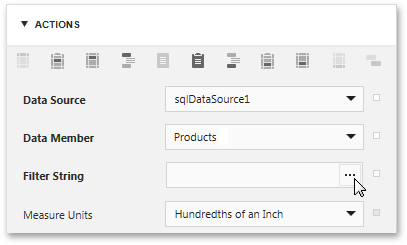
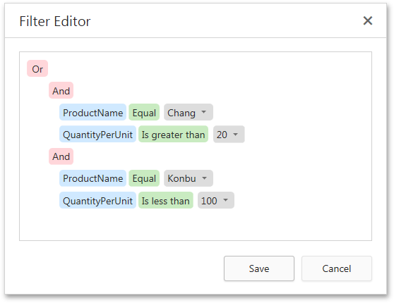
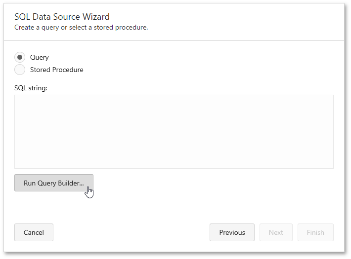
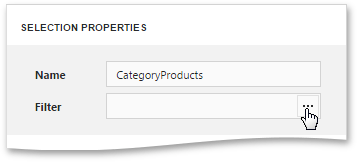

Filtering Data
If the data source bound to your report contains far more data rows than are necessary for processing report creation, you can exclude excessive or undesired data. To accomplish this, construct a filtering expression, using single or multiple data fields.
This document describes two approaches to filtering data with the Web Report Designer.
Filter Data at the Report Level
To filter report data, switch to the Properties Panel, and in the Actions or Data category, click the ellipsis button for the report's Filter String property.

In the invoked Filter Editor, construct the filtering expression.

In every filter condition, the left part contains either the data field name, or the name of the calculated field, which exists in this data source at the same level. The right part of the condition contains either a certain numerical or string value, or the name of the report parameters.
To access parameters, expand the drop-down menu for a value placeholder and select the Parameter item.

This will convert the value placeholder into a parameter placeholder. Click this placeholder to insert the required parameter.
Filter Data at the Data Source Level
To filter data at the report data source level, do the following.
- Invoke the SQL Data Source Wizard. To run the wizard to customize an existing query, switch to the Field List panel, select the required SQL query and click the Edit query button.
On this wizard page, click Run Query Builder... to edit the SQL query.

In the invoked Query Builder, specify a filtering expression that will be used to filter resulting data at the data source level. To do this, click the ellipsis button for the Filter property, and in the invoked Filter Editor, construct an expression.

Note that it is possible to embed query parameters into the expression.